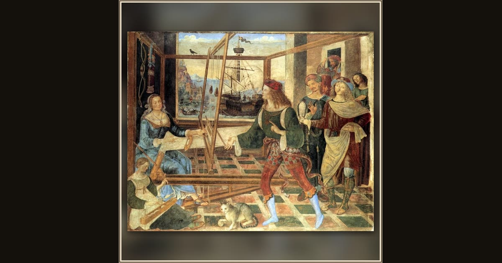

Penelope with the Suitors
Pinturicchio · about 1509 · The National Gallery · London, England
Penelope works at her loom while richly dressed suitors queue for her attention. The staff-bearing traveler entering the room may be Odysseus in disguise; distant scenes compress Circe and the Sirens into the same fresco. Explore its place in Book XIX of the O